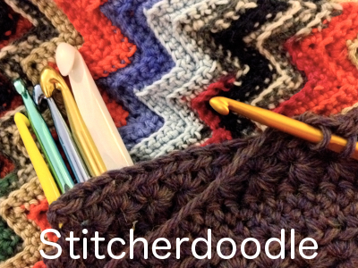
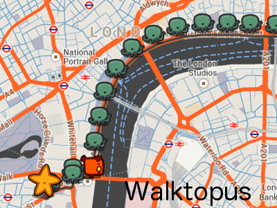

I'm a developer, former environmental engineer, handicrafter and donut enthusiast. After stints in academia and consulting, I now use coding and app development as outlets for creativity and practical problem solving. My overall goal is to create tools and services that help non-profit, small-business, educational or greentech organizations.
Experience
I am currently a software engineer at Teespring, working mainly in Ruby/Rails.I learned the fundamentals of object-oriented programming and web development through a 3-month immersive program that focused on Ruby, Javascript, jQuery, Coffeescript, MySQL, HTML5, CSS, Rails and RSpec.
Featured Projects

Stitcherdoodle
Designed for crocheters and knitters, Stitcherdoodle is a pattern parsing and formatting app that tracks project progress with a user-friendly interface.Take a look

Walktopus
My very first app, Walktopus is a Google-map-based app that creates a streetview slideshow of a walking route, from the walker's point of view.Take a look
Other Notable Work
As an engineering researcher I evaluated emerging water treatment technologies, namely surface-modified reverse osmosis membranes. You can see an abstract of my Ph.D. dissertation here.
Please check out my LinkedIn profile for more details on my professional experience as an environmental engineer and consultant.